| ・ 平成28年度卒業論文発表会 (H29.02.13) | |||
去年は6人で今年も6人です．引き続き計測・制御系の4研究室は東先生の呼びかけで合同開催です．写真はM2のTNくん担当です．来月卒研講演発表の人は今回の結果を活かしましょう． |
|||
|
動作確認 |
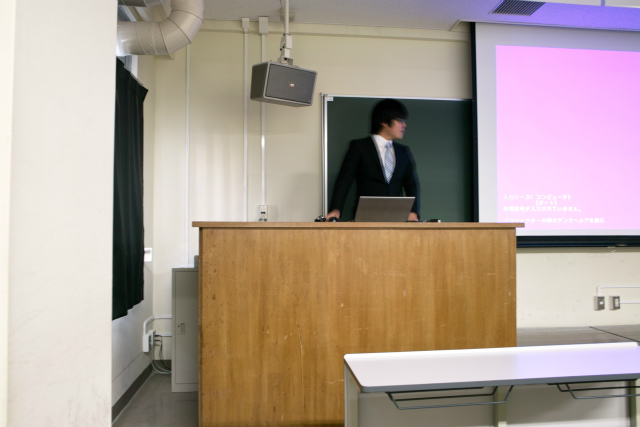
抵抗測定の鬼，I垣くんから | ||
|
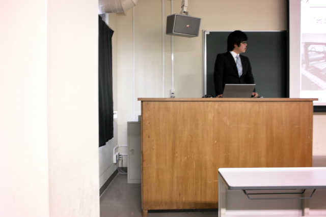
苦労して取ったデータ |
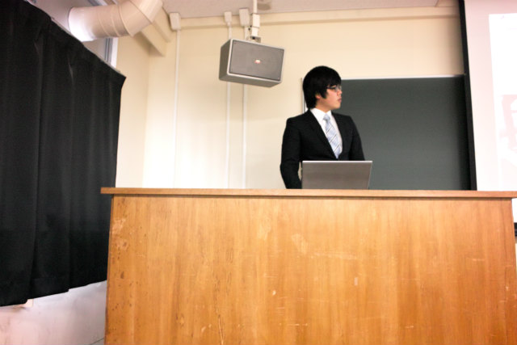
質疑も大変です | ||
|
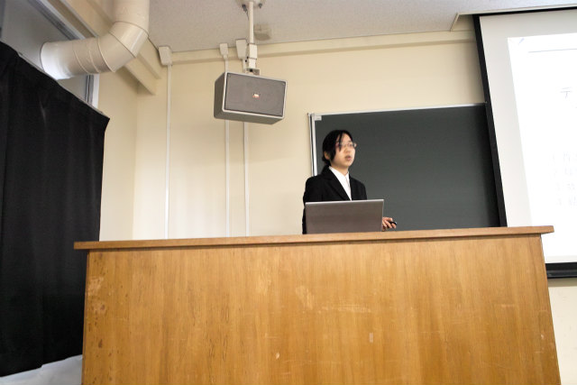
サブマイクロ計測はまかせて！Sguyさん |
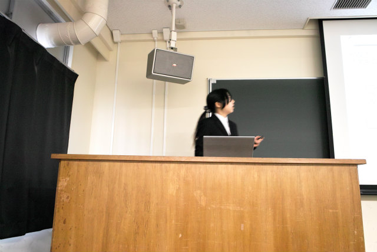
テーマの流れでmmではないでしょ | ||
|
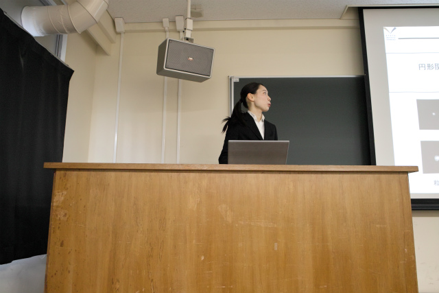
円形関数はBesselで！のD口さん |
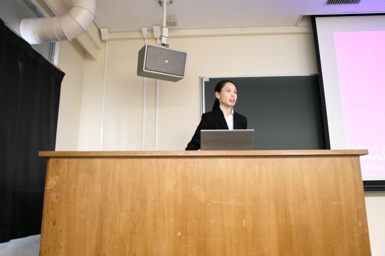
ベルX-1は渋すぎる例 | ||
|
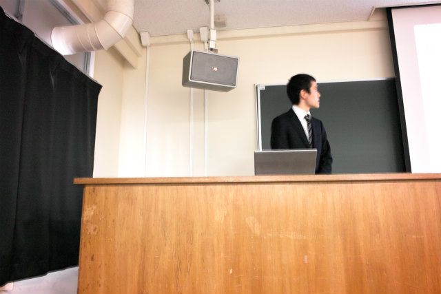
位相は回復する！K保西くん |
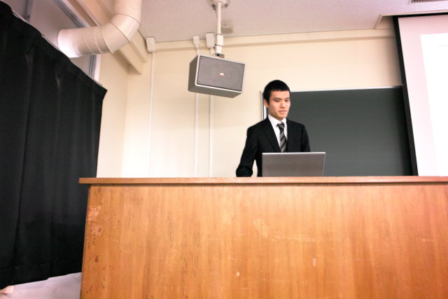
質疑は答えないと気まずい | ||
|
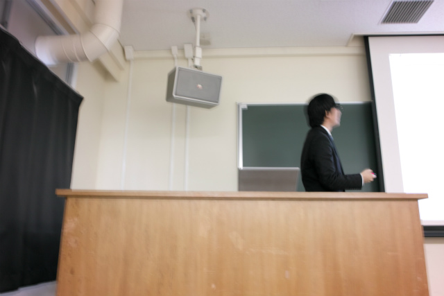
フルスクラッチステレオPIVのS田くん |
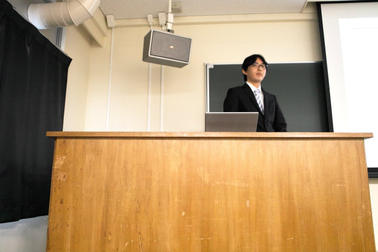
もっと熱く答えよう | ||
|
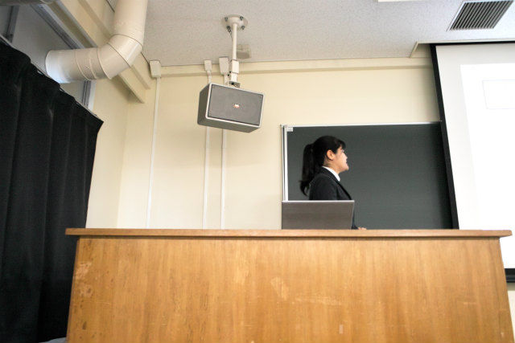
ホルン奏者でもあるT口さん |
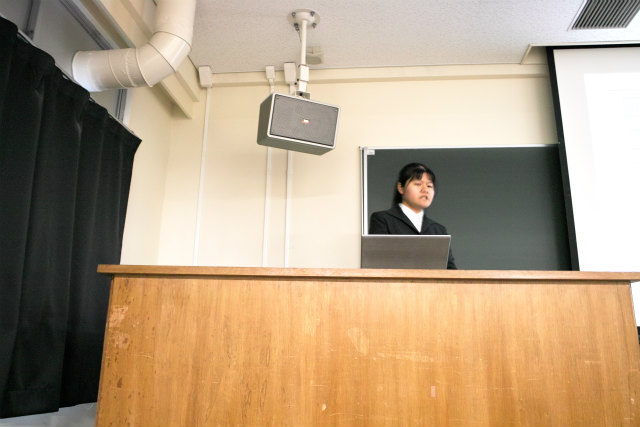
どうして？は来る質問 | ||